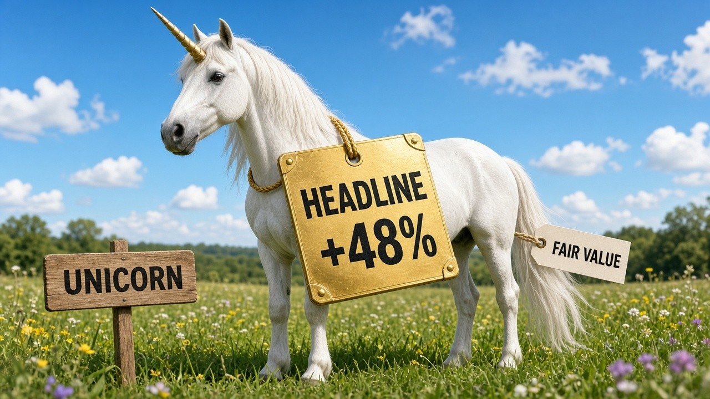

The unicorn's headline price vs fair value

Post
The headline valuation lands. Holders multiply by their slice. Gornall and Strebulaev (2020) modeled 135 US unicorns. Reported valuations averaged 48% above fair value. Common shares: 56% overvalued. Headline prices the newest share, not every share.
A metaphor image, not to scale. The 48% and 56% are the paper's modeled averages for its sample of 135 US unicorns, not a claim about any one company. The tag in the image shows +48% on the headline; the fair value tag has no number because the paper's figure is a ratio.
Sources
- Gornall and Strebulaev (2020), Squaring Venture Capital Valuations with Reality, Journal of Financial Economics 135(1), 120-143 (abstract): https://econpapers.repec.org/RePEc:eee:jfinec:v:135:y:2020:i:1:p:120-143
Made to go with a post by @iggym. Not investment advice.